HTML5, CSS e JS
Do básico à alta performance
Apresentação Daniel Laurindo
github: laurindo
twitter: @dslaurindo
Introdução
O que é HTML?

Exemplo
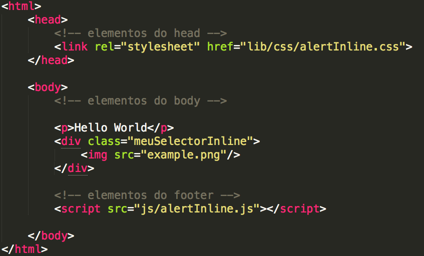Como o browser interpreta?
A árvore criada

A renderização nos browsers
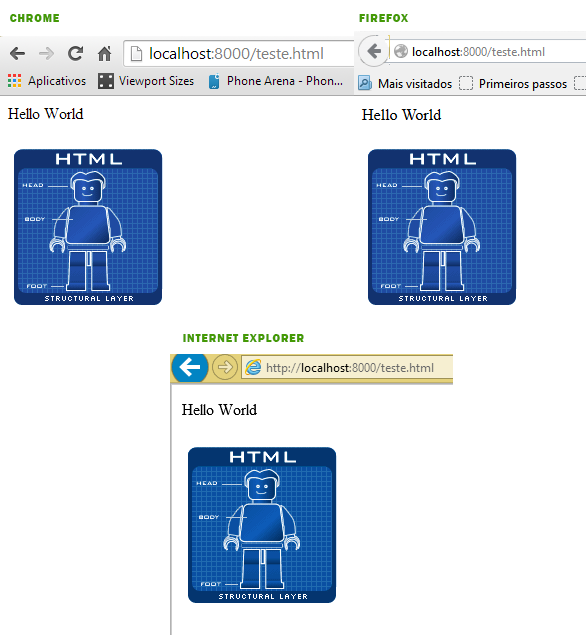Importante saber
Existe uma diferença entre DOM e Render Tree. DOM é o documento que representa como as marcações em HTML, XHTML e XML são organizadas e lidas pelo navegador, "é o cara que faz as coisas por debaixo dos panos". A Render Tree é uma outra árvore gerada pelo browser para mostrar o que você vê na tela de seu dispositivo.
Performance
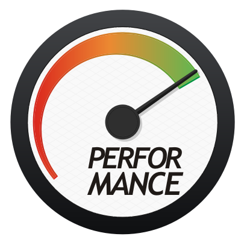Reflow :(
what???
Reflow é o resultado de um evento que desencadeia mudanças no jeito que a pagina deve ser renderizada, tomando tempo para cálculo e reposicionamento de elementos.
Mas isso gera um grande impacto?
Yahoo - 400 milissegundos de desaceleração resultou em uma queda de 5-9% no tráfego de página inteira.
Google - Um atraso de 400 milissegundos causou uma queda de 0,59% em pesquisas / usuário.
Bing - Uma página que foi 2 segundos mais lento resultou em uma queda de 4,3% na receita / usuário.
Não importa qual seja o objetivo de sua aplicação, nós desenvolvedores devemos sempre nos preocupar com otimização, código limpo e bem escrito porque isso envolve uma experiência positiva do usuário.
Mais exemplos de reflows
- Adicionar, remover ou atualizar o DOM;
- Esconder nós do DOM usando display:none;
- Mover e animar o DOM na página;
- Adicionar folhas de estilo on-the-fly que mudem o comportamento dos elementos;
- Redimensionar janelas;
Na prática
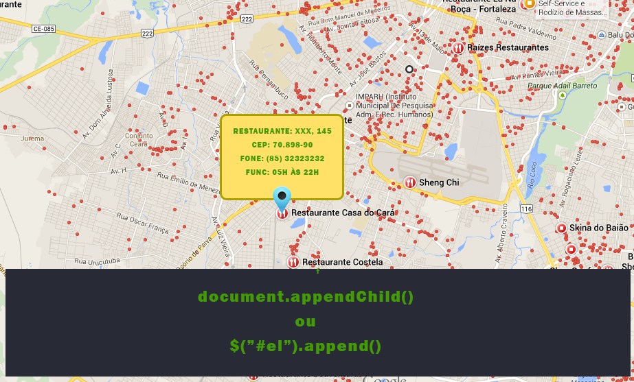Cuidado com scripts no head
Exemplo
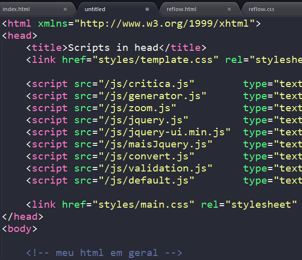Quaisquer arquivos javascript quando carregados utilizando a tag script são bloqueantes por natureza. Enquanto é feito o download e execução do script, todo processo de parser do DOM é bloqueado, impedindo a renderização do resto da página. E olha que isso irá ser aplicado a cada tag de script contida na página !!!!
Solução
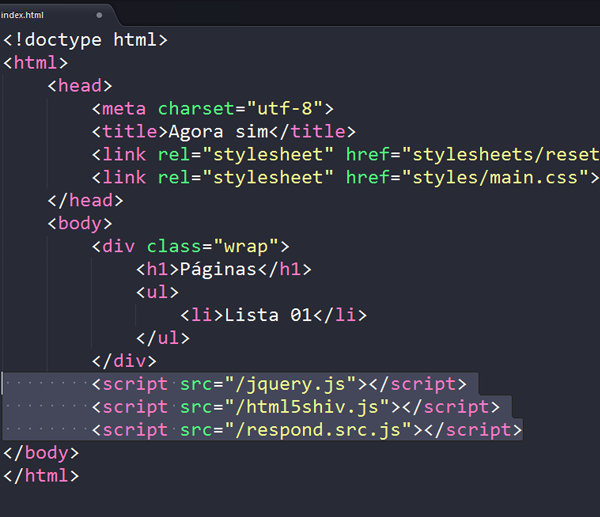Seu projeto dá suporte à apenas browsers modernos?
então experimente o async e o defer
http://zenorocha.com/html5-async-scripts/Evite código inline
1 ) Inline
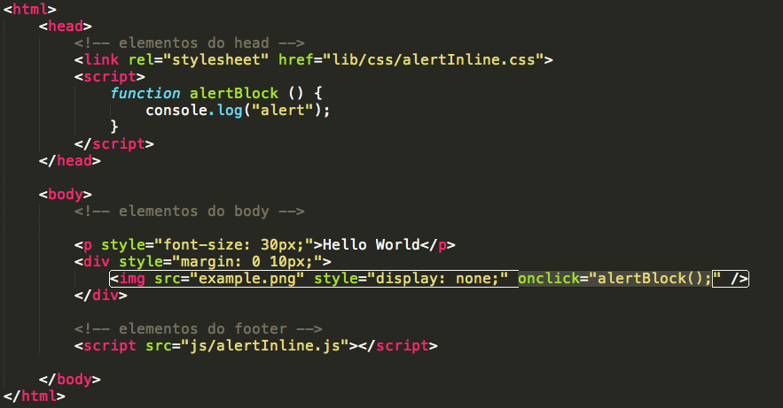Evite código incorporado
2 ) Incorporado
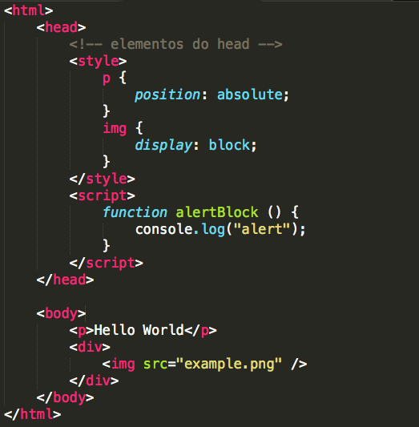Mas por que?
Apesar de reduzirem o número de requisições, aumentam o tamanho do documento HTML. Elas podem ser interessante quando você tem arquivos pequenos e o custo de uma requisição é maior. Nesse caso, faça testes para avaliar se há realmente ganho. Avalie também o objetivo da página e sua audiência, se o esperado é que usuários visitem essa página somente uma única vez, como por exemplo uma campanha temporária onde não se espera futuras visitas à mesma, utilizar inline/incorporado ajudará na redução do número de requisições.
Use códigos externos :)
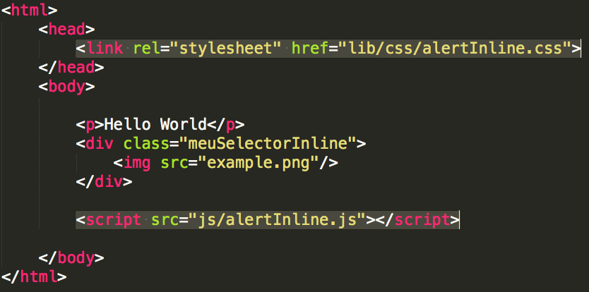Vantagens
- Melhora a organização do código;
- Possibilita ser armazenados em cache;
- Além de fornecer uma fácil manutenção;
Fique atento !!!!!!
Lista de elementos e atributos em desuso no HTMLLinks
* reflows* scripts in head
* async scripts
* Impacto de performance
* Ferramentas úteis
* Referências
Antes de dar o primeiro passo
Você deve saber a importância de UX(User Experience)
Experiência
É o que as pessoas sentem sobre o que importa para elas. São quais histórias elas contam para outras pessoas. São as boas memórias que elas mantêm. Junto a tudo isso está a ( usabilidade, arquitetura da informação, design de interação ). Experience é o todo.
Na hora de levantar os requisitos
- Tenha em mente o foco, o nincho, o público alvo do negócio
- Quais as necessidades do usuário?
- Quais os dispositivos mais utilizados?
- O cliente tem facilidade em aderir um browser mais moderno?
- "Browsers(IE6, 7, 8)" são requisitos?
Impacto de requisitos mal elaborados
- Inviabilidade do projeto
- Códigos acoplados
- Duplicação de código
- Alta taxa de bugs
- Manutenabilidade se torna cansativa e complicada
- Além de "gambiarras"
Referência
Primeiro Passo
Layout desenhado em cima de grid
Quando começamos a elaborar o HTML, o ideal é que o design seja bem feito em cima de uma grid.
Como assim?
good :)
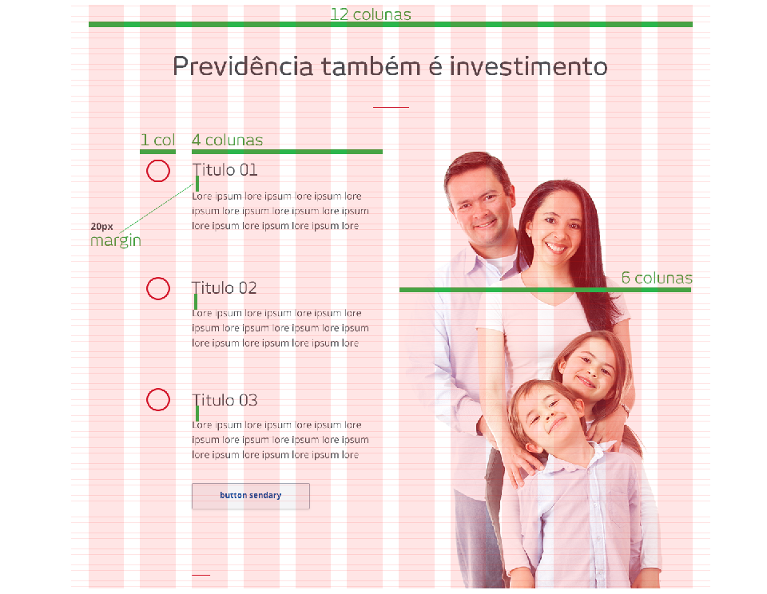bad :(
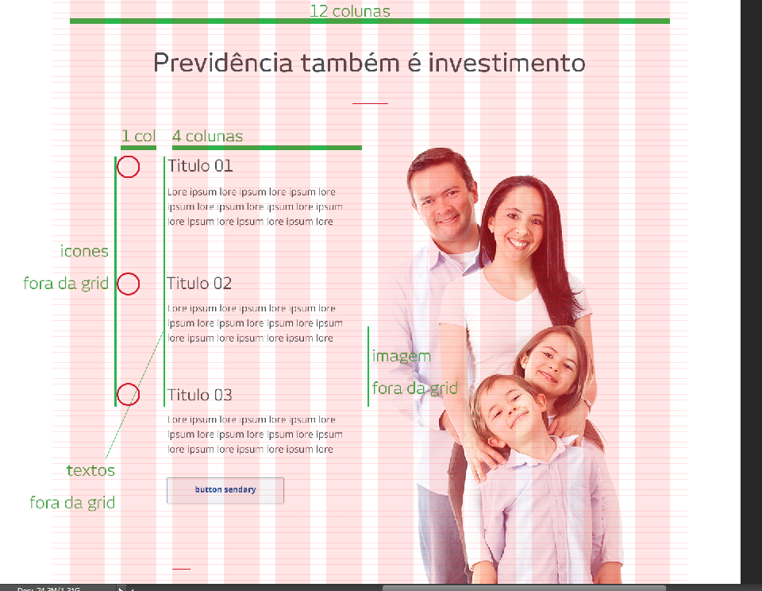Styleguide
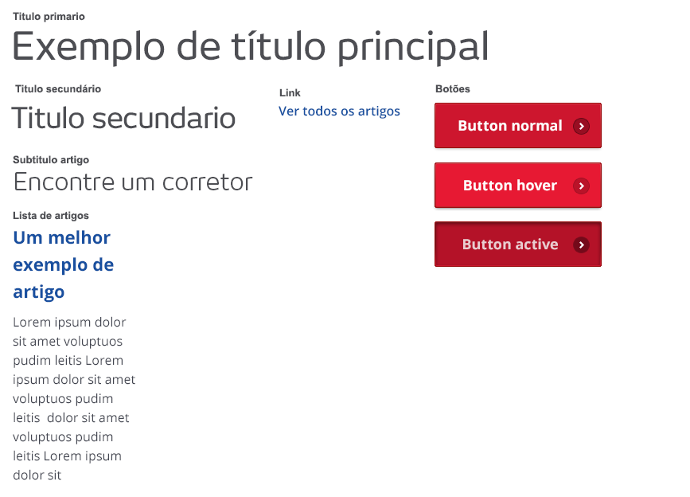Slides
Not a coder? No problem. There's a fully-featured visual editor for authoring these, try it out at http://slid.es.
Point of View
Press ESC to enter the slide overview.
Hold down alt and click on any element to zoom in on it using zoom.js. Alt + click anywhere to zoom back out.
Works in Mobile Safari
Try it out! You can swipe through the slides and pinch your way to the overview.
Marvelous Unordered List
- No order here
- Or here
- Or here
- Or here
Fantastic Ordered List
- One is smaller than...
- Two is smaller than...
- Three!
Transition Styles
You can select from different transitions, like:
Cube -
Page -
Concave -
Zoom -
Linear -
Fade -
None -
Default
Themes
Reveal.js comes with a few themes built in:
Default -
Sky -
Beige -
Simple -
Serif -
Night
Moon -
Solarized
* Theme demos are loaded after the presentation which leads to flicker. In production you should load your theme in the <head> using a <link>.
Global State
Set data-state="something" on a slide and "something"
will be added as a class to the document element when the slide is open. This lets you
apply broader style changes, like switching the background.
Custom Events
Additionally custom events can be triggered on a per slide basis by binding to the data-state name.
Reveal.addEventListener( 'customevent', function() {
console.log( '"customevent" has fired' );
} );
Slide Backgrounds
Set data-background="#007777" on a slide to change the full page background to the given color. All CSS color formats are supported.
Image Backgrounds
<section data-background="image.png">Repeated Image Backgrounds
<section data-background="image.png" data-background-repeat="repeat" data-background-size="100px">Background Transitions
Pass reveal.js the backgroundTransition: 'slide' config argument to make backgrounds slide rather than fade.
Background Transition Override
You can override background transitions per slide by using data-background-transition="slide".
Clever Quotes
These guys come in two forms, inline:
“The nice thing about standards is that there are so many to choose from”
and block:
“For years there has been a theory that millions of monkeys typing at random on millions of typewriters would reproduce the entire works of Shakespeare. The Internet has proven this theory to be untrue.”
Pretty Code
function linkify( selector ) {
if( supports3DTransforms ) {
var nodes = document.querySelectorAll( selector );
for( var i = 0, len = nodes.length; i < len; i++ ) {
var node = nodes[i];
if( !node.className ) {
node.className += ' roll';
}
}
}
}
Courtesy of highlight.js.
Intergalactic Interconnections
You can link between slides internally, like this.
Fragmented Views
Hit the next arrow...
... to step through ...
any type- of view
- fragments
Fragment Styles
There's a few styles of fragments, like:
grow
shrink
roll-in
fade-out
highlight-red
highlight-green
highlight-blue
current-visible
highlight-current-blue
Spectacular image!

Export to PDF
Presentations can be exported to PDF, below is an example that's been uploaded to SlideShare.
Take a Moment
Press b or period on your keyboard to enter the 'paused' mode. This mode is helpful when you want to take distracting slides off the screen during a presentation.